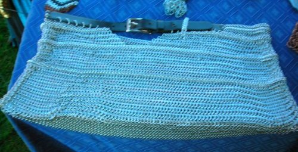

Viva Las Vegas, baby
It's shiny, it's expensive, and it goes perfectly with black leather.
And I've had about five people look at it and say, "Oh man,
I'm going to Vegas next year, I NEED that skirt!" (Note: None
of these people actually went so far as to buy it, so if anyone is
interested, we can talk...j/k, but seriously...)
The skirt came first (a LONG road trip up the East Coast, and idle hands make the devil's work, right?), followed by a purse to match. The handflower was ancient and initially had no affiliation with this set, but I noticed it sitting around and threw it into the mix for this picture. I currently have vague grandiose plans for a brassiere to top it all off.
The skirt is mostly a simple European 4:1, but it has some Half Persian 3:1 ribbing to make it more stable (otherwise, the European sheet tends to expand and sag a lot). I cannibalized an old black leather belt so that I could make the waist somewhat adjustable. If you scroll down, there is a second picture that shows the details a little better than the first, though the rings themselves are pretty fuzzy.
I'm not going to list details about the purse and handflower here. If you want more information about those two, they each have their very own pages: the Las Vegas Purse and the Handflower.
The skirt came first (a LONG road trip up the East Coast, and idle hands make the devil's work, right?), followed by a purse to match. The handflower was ancient and initially had no affiliation with this set, but I noticed it sitting around and threw it into the mix for this picture. I currently have vague grandiose plans for a brassiere to top it all off.
The skirt is mostly a simple European 4:1, but it has some Half Persian 3:1 ribbing to make it more stable (otherwise, the European sheet tends to expand and sag a lot). I cannibalized an old black leather belt so that I could make the waist somewhat adjustable. If you scroll down, there is a second picture that shows the details a little better than the first, though the rings themselves are pretty fuzzy.
I'm not going to list details about the purse and handflower here. If you want more information about those two, they each have their very own pages: the Las Vegas Purse and the Handflower.
Rings:
16 ga 1/4" ID
Bright Aluminum
In the European 4:1 and Half Persian 3:1 weaves.
Bright Aluminum
In the European 4:1 and Half Persian 3:1 weaves.